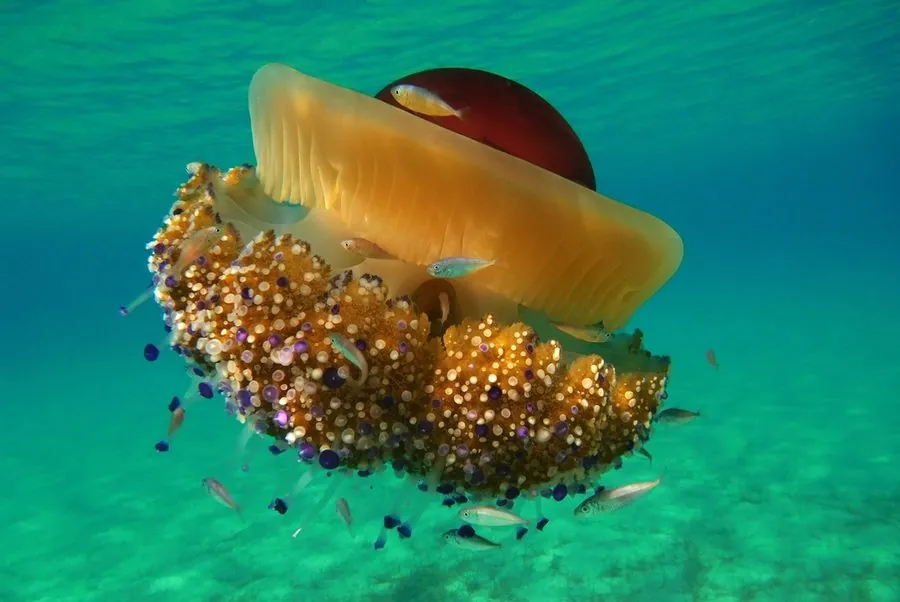

其他无脊椎动物 · 动物界
蛋黄水母 Cotylorhiza tuberculata

伞面中央有橙黄色隆起、形似煎蛋的大型水母，常见于地中海夏季，触手短、蜇伤轻微，常与小鱼共生。
- 分类
- 门刺胞动物门纲钵水母纲目根口水母目科皇冠水母科属蛋黄水母属
- 栖息环境
- 地中海浅海和近岸水域，夏季常见于表层
- 地理分布
- 地中海及其邻近海域，如意大利、西班牙和希腊沿海
- 保护级别
- 暂无评估
物种志
蛋黄水母的伞体呈圆盘状或半球形，直径约 10–35 cm，伞面中央有一个橙黄色或金黄色的隆起，看起来像一个蛋黄，伞缘和周围则呈半透明的淡蓝或淡紫色，因此得名煎蛋水母。它的触手短小，末端带有小疙瘩。
它生活在 Mediterranean 浅海，常见于夏季近岸水域，靠触手和口腕捕食浮游生物，体内还共生着虫黄藻，能通过光合作用获得营养。蛋黄水母的蜇伤较弱，多数人接触后只有轻微刺痛。幼鱼和小蟹常躲藏在它的伞下和触手间，获得保护。它在地中海数量较多，夏季常被冲上海滩，是当地常见的观光水母；海水升温和富营养化会影响它的数量变化。
形态与习性
- 食性捕食浮游生物，也靠虫黄藻提供营养
- 伞径约 10–35 cm
- 形态伞面中央有橙黄色隆起，形似煎蛋
- 毒性蜇伤较弱，多数人只有轻微刺痛
- 共生幼鱼和小蟹常躲在伞下和触手间
- 分布地中海及其邻近海域
趣味知识
- 蛋黄水母的伞面中央有一块橙黄色隆起，看起来像煎蛋的蛋黄。
- 它的蜇伤比较轻微，但敏感人群仍可能有皮肤反应。
- 幼鱼和小蟹常躲在蛋黄水母的伞下，借助它的刺细胞保护自己。